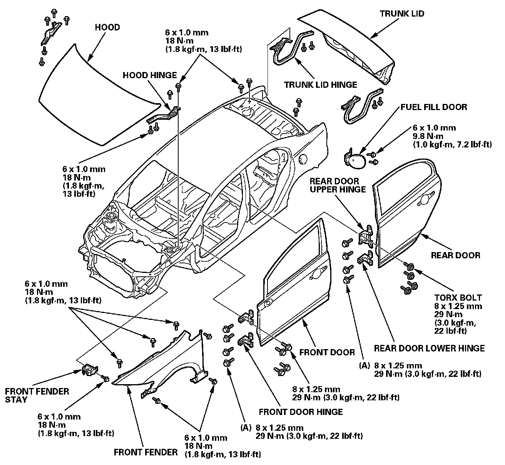
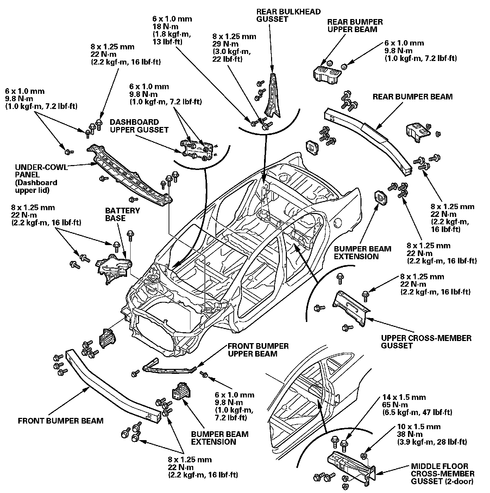

Exterior Parts Removal / Installation
Exterior Parts Removal/InstallationNOTE:
- To adjust the alignment of the hood, the doors, and the trunk lid, refer to the appropriate Service Procedures.
- When adjusting the door in or out, replace the mounting bolts (A) (90102-SFA-305).
- Apply the spot sealer to mating surface, then install the front fender, hood, doors, trunk, and hinges.

